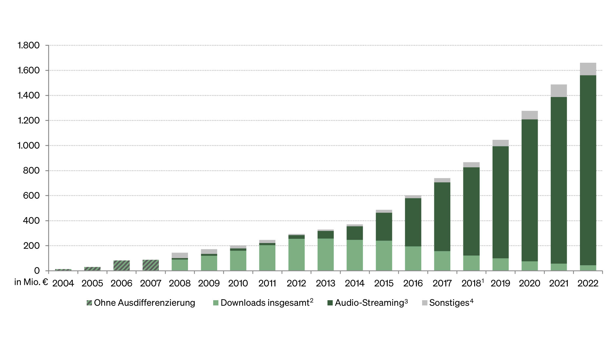

Die größten Einnahmen in der Musikindustrie gehen aus Streaming und digitaler Musik hervor (Abb.1 - Umsatz). Es wird ebenso immer populärer, Musik auch digital zu erstellen. Dafür gibt es viele unterschiedliche Methoden.
Eine Methode ist das Cloudcomputing:
Cloudcomputing funktioniert online, also in der "Cloud". Die IT-Unternehmen stellen dabei die Ressourcen, wie Rechenleistung, Speicherplatz und auch die Software im Internet bereit.

Abb.1 - Umsatz durch digitale MusikDas ermöglicht virtuelles Arbeiten und eine flexible IT-Infrastruktur, was sich kosteneffizient auswirkt.
Vorteilhaft ist die Skalierbarkeit der Ressourcen. Wenn beispielsweise mehr Speicherplatz benötigt wird, muss nicht extra in die nötige Hardware investiert werden. Er kann einfach über das Unternehmen "bestellt" werden. Das macht das arbeiten auch flexibler.
Cloudcomputing ist kosteneffizient, da keine Kosten für die Beschaffung und Wartung einer Serverstruktur anfallen.
Die Zusammenarbeit zwischen Produzent und Künstler kann effiziente gestaltet werden. Da die Musik online erstellt wird, ist niemand an einen Ort gebunden. Sie können von der ganzen Welt aus darauf zugreifen und in Echtzeit zusammenarbeiten.
Ein Problem könnte die Sicherheit der Daten darstellen. Zwar sind die Dateien von der IT des Unternehmens geschützt, jedoch birgt es immer ein Risiko etwas ins Internet zu stellen.